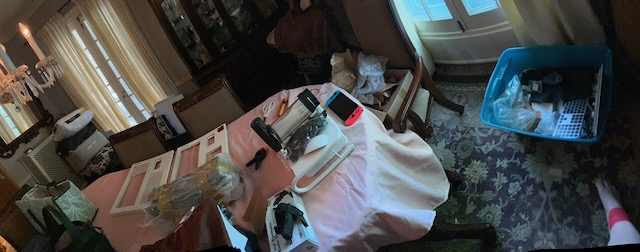

Perspective, Peregrine, and Pang
Home / Posts / Markdown source
Forgotten Industries // Curated Post // 2026.06.06
Status
Draft scaffold. Matthew has the post in his head; this page preserves the structure, evidence links, and image queue without replacing the final voice.
Source Sets
Working Spine
Perspective: what changes when old work is seen as evidence instead of clutter.
Peregrine: the field-system lesson, including recovery, loss, repair, and restraint.
Pang: the sharp human signal underneath the machines, held in the record without turning it into performance.
Image Queue
Temporary preview images only. Replace or reorder during the final curation pass.
Perspective: hardware as found, before the archive smooths anything out.
Peregrine: aircraft record, recovery boundary, and field-system evidence.

Pang: the room-scale evidence of return, interruption, and restart.
Curation Notes
Keep the first two dumps intact as source evidence.
Use curated derivatives only after selecting final images.
Link every final image back to the source set or object record.
Publish this as the manifesto for the one-post-at-a-time workflow.
-- Forgotten Industries // Post Scaffold // 2026.06.06